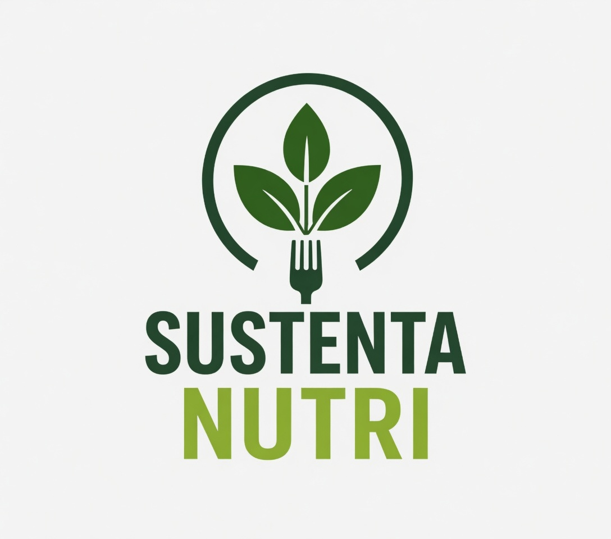

Projeto Educacional • Nutrição e Dietética

Sustenta Nutri
Projeto do Curso Técnico em Nutrição e Dietética
(EETEPA - IEEP). Transformando vidas por meio da
alimentação consciente e da promoção da saúde regional.
🌱 Sustentabilidade • 🍎 Saúde • 📚 Educação
🧠 Quiz da Nutrição
Carregando pergunta...
Verdadeiro
Falso
Próxima Pergunta →
"Pequenas escolhas geram grandes transformações."
Curso Técnico em Nutrição e Dietética EETAPA - IEEP
Coordenação: Profa. Roberta Campos
Equipe do Projeto:
© 2026 Sustenta Nutri. Todos os direitos reservados.
Desenvolvido por
Lucas Brito